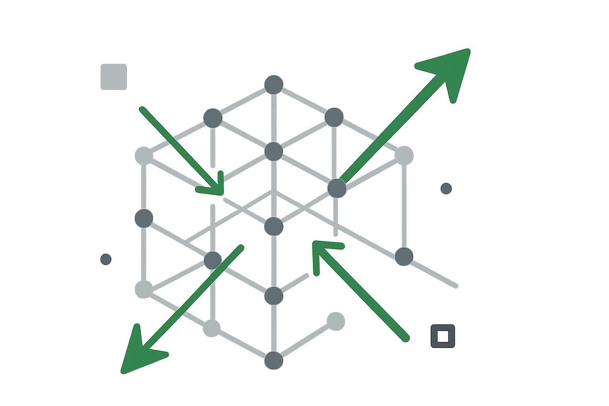

technický pojem
Vektorová databáze
Vector database
Představte si, že nehledáte dokument podle přesných slov, ale podle významu. Úředník zadá dotaz „kontrola hospodaření školy“ a systém najde metodiku nazvanou „finanční audit příspěvkových organizací“. Přestože se použila jiná slova, význam je stejný – a právě to umožňují vektorové databáze: vyhledávání podle podobnosti významu.
Vektorová databáze je specializovaný úložný systém pro ukládání a vyhledávání dat ve formě vektorových reprezentací (embeddingů). Každý objekt (např. text, obrázek, zvuk) je převeden na vektor čísel a spolu s metadaty uložen do databáze. Základní funkcí je vyhledávání „nejbližších sousedů“ – tedy vektorů, které jsou nejpodobnější zadanému vektoru podle určité metriky podobnosti (např. kosinové). Vektorové databáze se používají k vyhledávání podobných textů, obrázků, videí či jiných nestrukturovaných dat podle jejich významu, nikoli jen podle shody slov.
Proč nestačí běžné databáze?
Relační databáze (např. SQL) výborně pracují se strukturovanými tabulkami a přesnou shodou. Neumí však přirozeně hledat „texty s podobným významem“ nebo „obrázky podobné tomuto“. Vektorové databáze doplňují stávající systémy o schopnost pracovat s nestrukturovanými daty (texty, obrázky, zvuky, videa) přes jejich číselnou reprezentaci (embedding).
Umělá inteligence si nerozumí s běžnými databázemi, ale rozumí vektorovým. Proto se vektorové databáze často používají jako základ pro AI aplikace, například chatboty, které odpovídají na otázky na základě velkého množství dokumentů.
Jak fungují vektorové databáze?
Pro jednoduchost si představme prostor pouze se 2 rozměry: počet končetin a
velikost tvora.
Každé zvíře je bod – vektor [počet končetin, velikost tvora]. Zvířata
s podobnými vlastnostmi
budou
blízko u
sebe.
Pokud bychom chtěli zvířata dle příkladu výše uložit ve vektorové databázi, mohli bychom je reprezentovat následujícím způsobem:
| Zvíře | Embedding vektor |
|---|---|
| Pes | [4, 1] |
| Kočka | [4, 0.5] |
| Člověk | [2, 2] |
| Slon | [4, 3] |
| Had | [0, 0.5] |
| Šnek | [0, 0.1] |
V reálných systémech má vektor stovky až tisíce rozměrů. Nelze si je snadno představit, protože nejde o dvě konkrétní osy (např. „počet končetin" a „velikost tvora"), ale o stovky čísel, která společně "kódují" jemné významové rysy slov, vět nebo obrázků. Jeden embedding slova může vypadat například takto:
vector("strýc") = [12.4, 232.1, -323.7, 0.8, ... , 41.2]Každá souřadnice sama o sobě není interpretovatelná člověkem. Pro nás je embedding černou skříňkou – vidíme vstup (slovo, věta) a výstup (vektor), ale nemůžeme přímo říct, co znamená „souřadnice č. 347“. Přesto tato skrytá reprezentace zachovává užitečné vztahy mezi pojmy.
Díky tomu fungují i vektorové operace a analogie:
vector("strýc") - vector("muž") + vector("žena") ≈ vector("teta")vector("král") - vector("muž") + vector("žena") ≈ vector("královna")Nemusí jít nutně pouze o vztah "muž - žena". Podobně lze zachytit i jiné významové vztahy, například "hlavní město - země" nebo "nástroj - činnost". Podívejme se na další příklad:
vector("Paříž") - vector("Francie") + vector("Německo") ≈ vector("Berlín")vector("auto") - vector("benzín") + vector("elektřina") ≈ vector("elektromobil")vector("učitel") - vector("škola") + vector("nemocnice") ≈ vector("doktor")Tyto vztahy nejsou explicitně naprogramované, ale vyplývají z kontextu, ve kterém se slova vyskytovala v trénovacích datech. V tomto smyslu AI modely neprogramujeme, ale trénujeme.
Tyto vztahy vznikají díky tomu, že model strojového učení se učí ze statistických souvislostí v obrovském množství textů. Významově blízká slova nebo pojmy („pes“ – „kočka“, „město“ – „vesnice“) se proto v embeddingovém prostoru ocitají blízko sebe, zatímco odlišná („pes“ – „letadlo“) leží daleko.
Embeddingy vycházejí z tokenů, tedy jednotek textu, které model dokáže zpracovat. Token obvykle odpovídá slovu nebo části slova (např. „učit“, „-el“, „na“). Model přiřadí embedding každému tokenu a z jejich kombinace pak vytvoří embedding celé věty, odstavce nebo dokumentu. Díky tomu lze vyhledávat nejen jednotlivá slova, ale i celé texty podle jejich významu.
Jak vektorová databáze hledá podobnost?
Představme si, že každý dokument, věta nebo obrázek je bod v mnoharozměrném prostoru. Pokud chceme najít podobný dokument, ptáme se: Které body leží nejblíže mému dotazu? To je princip vyhledávání nejbližších sousedů (nearest neighbors search).
Blízkost se počítá pomocí matematických metrik podobnosti:
- kosinová podobnost (cosine similarity) – úhel mezi dvěma vektory, vhodný pro porovnávání významu textů,
- skalární součin (dot product) – využívá se zejména v doporučovacích systémech,
- eukleidovská vzdálenost – vzdálenost „pravítkem“ v prostoru, častá u obrazových dat.
Protože vektory mají stovky až tisíce rozměrů, vyhledávání přesně by bylo velmi pomalé. Proto se v praxi používá přibližné vyhledávání nejbližších sousedů (ANN). To pracuje s chytrými indexy (např. HNSW, IVF-PQ), které rychle zužují prostor možných kandidátů. Díky nim je možné hledat během milisekund i mezi miliony vektorů.
Takové hledání je do určité míry černá skříňka: my přesně nevíme, co znamená každý rozměr vektoru, ale víme, že algoritmus dokáže efektivně spočítat, které položky jsou si podle významu blízké.
V praxi nestačí hledat jen podle významu. Úředníci často potřebují kombinovat významovou podobnost s přesnými podmínkami: hledám metodiku, která se týká „datových schránek“, ale jen z roku 2022. Proto se používá hybridní vyhledávání:
- nejprve se najdou významově podobné dokumenty pomocí vektorů,
- poté se výsledek zpřesní filtrováním podle metadat (rok, agenda, autor),
- případně se kombinuje s tradičním fulltextovým vyhledáváním, aby se zohlednila přesná slova.
Díky hybridnímu přístupu dostane uživatel výsledky, které jsou nejen podobné významem, ale také relevantní pro jeho kontext.
Jak to souvisí s AI a jazykovými modely?
Velké jazykové modely jako ChatGPT či Gemini dokážou generovat texty a odpovídat na otázky. Aby však mohly čerpat z konkrétních dokumentů, potřebují systém, který jim tyto dokumenty podle významu rychle vyhledá. Právě k tomu slouží vektorové databáze.
Tento přístup se nazývá RAG (retrieval-augmented generation): model si „nepamatuje“ všechny předpisy nebo metodiky, ale k odpovědi si z vektorové databáze vyhledá relevantní texty a pak je použije k formulaci odpovědi. Díky tomu lze jazykové modely bezpečně napojit na interní informace úřadu, aniž by musely být všechny uloženy přímo uvnitř modelu.
AI GRAMOTNOST
Proč bych tomu měl rozumět?
Vektorové databáze nejsou jen technický detail. Jsou klíčovým stavebním kamenem pro to, aby umělá inteligence dokázala pracovat s právními předpisy, metodikami nebo rozhodnutími úřadů. Pokud úředník chápe jejich princip, snáze rozpozná, co od AI nástrojů může čekat a kde jsou jejich limity.
To je podstatou AI gramotnosti: rozumět základním principům, aby bylo možné zodpovědně rozhodovat o nasazení AI, klást správné otázky dodavatelům a dokázat vysvětlit občanům, jak systém funguje. Nemusíte znát všechny algoritmy, ale měli byste chápat, že „AI nehledá podle slov, ale podle významu“ – a že k tomu využívá právě vektorové databáze.
Velmi zjednodušeně řečeno jsou tedy vektorové databáze takové, které místo přesné shody slov či čísel vyhledávají podle podobnosti významu. Umí tak rychle najít dokumenty, části metodik či podání, která „říkají totéž jinými slovy“. Kromě vektorů uchovávají i běžná metadata a umožňují nad nimi filtrovat (např. jen dokumenty od určitého žadatele nebo z určitého období).